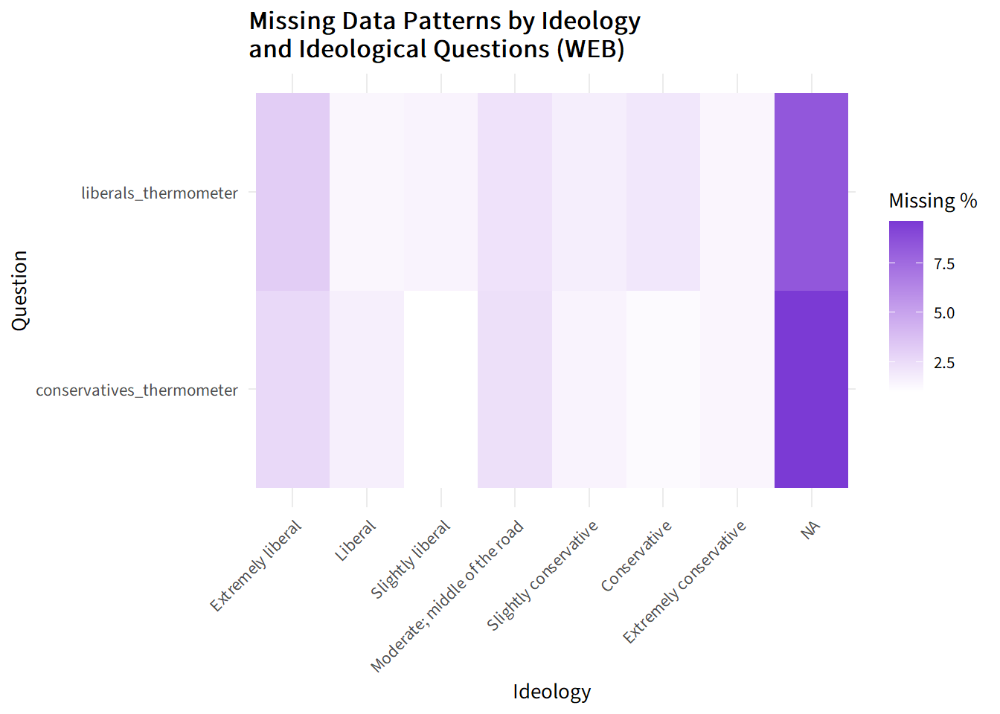

library(tidyverse)
library(readr)
library(here)
library(survey)
library(ggplot2)
library(survey)
library(extrafont)
library(naniar)Warning: package 'naniar' was built under R version 4.5.1library(tidyverse)
library(readr)
library(here)
library(survey)
library(ggplot2)
library(survey)
library(extrafont)
library(naniar)Warning: package 'naniar' was built under R version 4.5.1anes_2024 <- read_csv("../data/anes_2024_clean.csv")
codebook <- read_csv("../data/codebook.csv")anes_2024 <- anes_2024 |>
replace_with_na_all(condition = ~.x < 0) |>
mutate(
race_ethnicity = case_when(
race_ethnicity == '-9' ~ "Refused",
race_ethnicity == '-8' ~ "Don't know",
race_ethnicity == '-4' ~ "Error",
race_ethnicity == '1' ~ "White",
race_ethnicity == '2' ~ "Black",
race_ethnicity == '3' ~ "Hispanic",
race_ethnicity == '4' ~ "Asian/Native Hawaiian/other Pacific Islander",
race_ethnicity == '5' ~ "Native American/Alaska Native/other",
race_ethnicity == '6' ~ "Multiple races",
TRUE ~ as.character(race_ethnicity)
),
gender = case_when(
gender == '-9' ~ "Refused",
gender == '-1' ~ "Inapplicable",
gender == '1' ~ "Man",
gender == '2' ~ "Woman",
gender == '3' ~ "Nonbinary",
gender == '4' ~ "Something else, please specify",
TRUE ~ as.character(gender)
),
educ = case_when(
educ == '-9' ~ "Refused",
educ == '-8' ~ "Don't Know",
educ == '-4' ~ "Error",
educ == '-2' ~ "Other/specify open-ended responses to be coded",
educ == '1' ~ "Less than high school credential",
educ == '2' ~ "High school credential",
educ == '3' ~ "Some post-high school, no bachelor's degree",
educ == '4' ~ "Bachelor's degree",
educ == '5' ~ "Graduate degree",
TRUE ~ as.character(educ)
),
lib_con_7pt = case_when(
lib_con_7pt %in% c('-9', '-4', '99') ~ "NA",
lib_con_7pt == '1' ~ "Extremely liberal",
lib_con_7pt == '2' ~ "Liberal",
lib_con_7pt == '3' ~ "Slightly liberal",
lib_con_7pt == '4' ~ "Moderate; middle of the road",
lib_con_7pt == '5' ~ "Slightly conservative",
lib_con_7pt == '6' ~ "Conservative",
lib_con_7pt == '7' ~ "Extremely conservative",
TRUE ~ as.character(lib_con_7pt)
)
) |>
mutate(
educ = factor(educ, levels = c(
"Refused", "Don't Know", "Error", "Other/specify open-ended responses to be coded",
"Less than high school credential", "High school credential",
"Some post-high school, no bachelor's degree", "Bachelor's degree", "Graduate degree"
)),
lib_con_7pt = factor(lib_con_7pt, levels = c(
"Extremely liberal", "Liberal", "Slightly liberal",
"Moderate; middle of the road", "Slightly conservative",
"Conservative", "Extremely conservative", "NA"
))
)missing_count <- anes_2024 |>
summarise(across(everything(), ~ sum(is.na(.x)))) |>
pivot_longer(cols = everything(), names_to = "variable", values_to = "neg_count") |>
arrange(desc(neg_count)) |>
mutate(variable = fct_reorder(variable, neg_count))
top_10_missing_count <- missing_count |>
head(10)
ggplot(top_10_missing_count, aes(x = neg_count, y = variable)) +
geom_bar(stat = "identity", fill = "#b4b5b9") +
geom_bar(data = top_10_missing_count[1, ], stat = "identity", fill = "#7b3ad4") +
geom_text(aes(label = neg_count, hjust = 1.15), color = "white", family = "Source Sans 3") +
labs(title = "Top 10 Least Answered Questions", x = "Respondents Missed", y = "Question",
caption = "Data source: ANES 2024") +
theme_minimal() +
theme(text = element_text(family = "Source Sans 3"),
plot.title = element_text(face = "bold"),
plot.caption = element_text(face = "italic"))least_10_missing_count <- missing_count |>
arrange(neg_count) |>
slice(-(1:4)) |>
head(10)
ggplot(least_10_missing_count, aes(x = neg_count, y = variable)) +
geom_bar(stat = "identity", fill = "#b4b5b9") +
geom_bar(data = least_10_missing_count[1, ], stat = "identity", fill = "#7b3ad4") +
geom_text(aes(label = neg_count, hjust = 1.15), color = "white", family = "Source Sans 3") +
labs(title = "Top 10 Most Answered Questions", x = "Respondents Missed", y = "Question",
caption = "Data source: ANES 2024") +
theme_minimal() +
theme(text = element_text(family = "Source Sans 3"),
plot.title = element_text(face = "bold"),
plot.caption = element_text(face = "italic"))least_10_demographic_count <- missing_count |>
arrange((neg_count)) |>
slice(-(1:4)) |>
filter(variable %in% c("age_election_day", "educ", "marriage", "income", "religion", "gender", "race_ethnicity")) |>
head(10)
ggplot(least_10_demographic_count, aes(x = neg_count, y = variable)) +
geom_bar(stat = "identity", fill = "#b4b5b9") +
geom_bar(data = least_10_demographic_count[1, ], stat = "identity", fill = "#7b3ad4") +
geom_text(aes(label = neg_count, hjust = 1.15), color = "white", family = "Source Sans 3") +
labs(title = "Most Answered Demographic Questions", x = "Respondents Missed", y = "Question",
caption = "Data source: ANES 2024") +
theme_minimal() +
theme(text = element_text(family = "Source Sans 3"),
plot.title = element_text(face = "bold"),
plot.caption = element_text(face = "italic"))
compute_missing_simple <- function(data, group_label_col, question_col) {
data |>
group_by(across(all_of(group_label_col))) |>
summarize(
missing_count = sum(is.na(.data[[question_col]])),
missing_percentage = 100 * missing_count / n(),
.groups = "drop"
) |>
arrange(desc(missing_percentage))
}race_gaymarriage_missing <- compute_missing_simple(anes_2024, "race_ethnicity", "gay_marriage")
race_poli_party_reg_missing <- compute_missing_simple(anes_2024, "race_ethnicity", "poli_party_reg")
race_pres_vote_missing <- compute_missing_simple(anes_2024, "race_ethnicity", "pres_vote")
#View(race_gaymarriage_missing)
#View(race_poli_party_reg_missing)
#View(race_pres_vote_missing)# Select demographic variables
anes_2024_demographics <- anes_2024 |>
select(age_election_day, educ, marriage, income, religion, gender, race_ethnicity)
# Select racial thermometer variables
anes_2024_racethermometer <- anes_2024 |>
select(white_thermometer, black_thermometer, asian_thermometer, hispanic_thermometer)
# Thermometer + ideology arrangement
anes_2024_racethermometer_arranged <- anes_2024 |>
arrange(lib_con_7pt) |>
select(white_thermometer, black_thermometer, asian_thermometer, hispanic_thermometer, lib_con_7pt)
# Basic missingness plots
vis_miss(anes_2024_demographics)vis_miss(anes_2024_racethermometer)vis_miss(anes_2024_racethermometer_arranged)anes_2024 |>
select(educ, white_thermometer, black_thermometer, asian_thermometer, hispanic_thermometer) |>
gg_miss_fct(fct = educ) +
scale_fill_gradient(low = "white", high = "#7b3ad4") +
theme_minimal() +
labs(title = "Missing Data Patterns by Education Level \nand Race Thermometer Questions",
x = "Education",
y = "Question",
fill = "Missing %") +
theme(
text = element_text(family = "Source Sans 3"),
plot.title = element_text(face = "bold"),
plot.caption = element_text(face = "italic"),
axis.text.x = element_text(angle = 45, hjust = 1),
)anes_2024 |>
select(race_ethnicity, white_thermometer, black_thermometer, asian_thermometer, hispanic_thermometer) |>
mutate(race_ethnicity = fct_relevel(
race_ethnicity,
"White",
"Hispanic",
"Black",
"Asian/Native Hawaiian/other Pacific Islander",
"Native American/Alaska Native/other")) |>
gg_miss_fct(fct = race_ethnicity) +
scale_fill_gradient(low = "white", high = "#7b3ad4") +
theme_minimal() +
labs(title = "Missing Data Patterns by Race \nand Race Thermometer Questions",
x = "Race",
y = "Question",
fill = "Missing %") +
theme(
text = element_text(family = "Source Sans 3"),
plot.title = element_text(face = "bold"),
plot.caption = element_text(face = "italic"),
axis.text.x = element_text(angle = 45, hjust = 1),
)
anes_2024 |>
select(lib_con_7pt, white_thermometer, black_thermometer, asian_thermometer, hispanic_thermometer) |>
gg_miss_fct(fct = lib_con_7pt) +
scale_fill_gradient(low = "white", high = "#7b3ad4") +
theme_minimal() +
labs(title = "Missing Data Patterns by Ideology \nand Race Thermometer Questions",
x = "Education",
y = "Question",
fill = "Missing %") +
theme(
text = element_text(family = "Source Sans 3"),
plot.title = element_text(face = "bold"),
plot.caption = element_text(face = "italic"),
axis.text.x = element_text(angle = 45, hjust = 1)
)
anes_2024 |>
select(lib_con_7pt, gay_marriage_view, gay_marriage, poli_party_reg, pres_vote, import_limits) |>
gg_miss_fct(fct = lib_con_7pt) +
scale_fill_gradient(low = "white", high = "#7b3ad4") +
theme_minimal() +
labs(title = "Missing Data Patterns by Ideology \nand Top 5 Unanswered Questions",
x = "Education",
y = "Question",
fill = "Missing %") +
theme(
text = element_text(family = "Source Sans 3"),
plot.title = element_text(face = "bold"),
plot.caption = element_text(face = "italic"),
axis.text.x = element_text(angle = 45, hjust = 1)
)
anes_2024 |>
gg_miss_fct(fct = lib_con_7pt) +
scale_fill_gradient(low = "white", high = "#7b3ad4") +
theme_minimal() +
labs(title = "Missing Data Patterns by Ideology \nand All Survey Questions",
x = "Education",
y = "Question",
fill = "Missing %") +
theme(
text = element_text(family = "Source Sans 3"),
plot.title = element_text(face = "bold"),
plot.caption = element_text(face = "italic"),
axis.text.x = element_text(angle = 45, hjust = 1),
axis.text.y = element_blank()
)